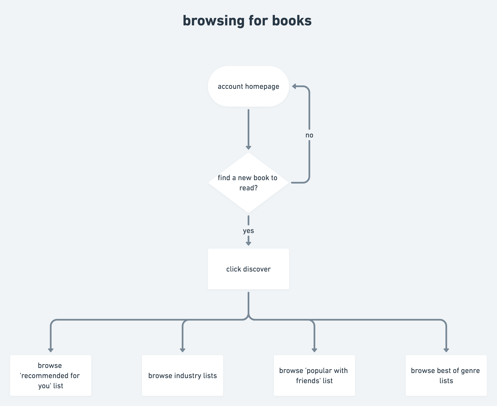
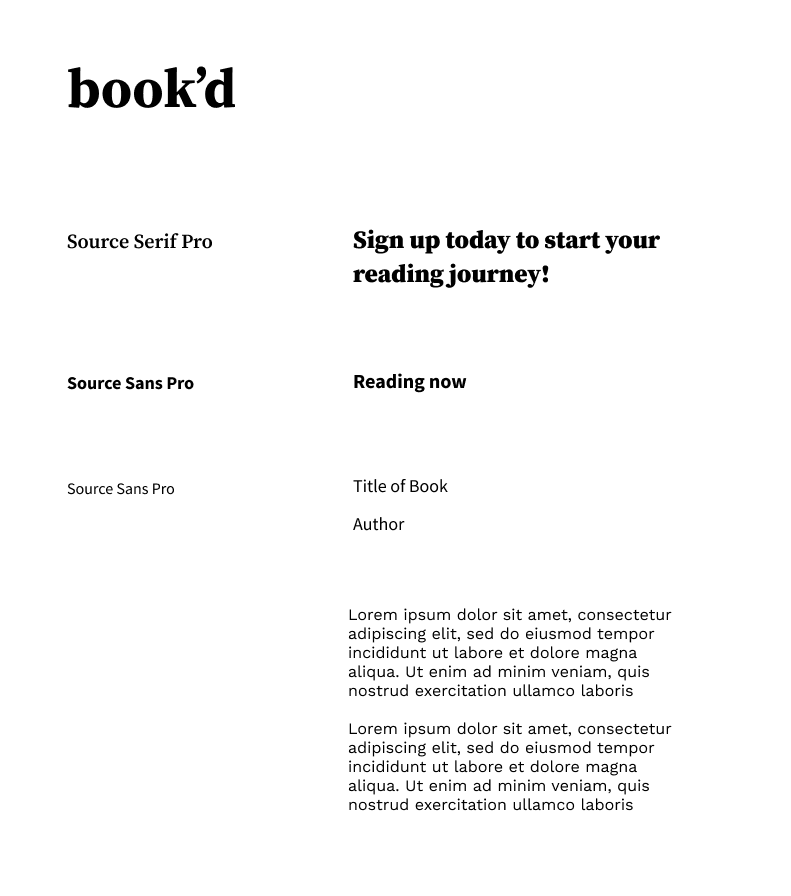
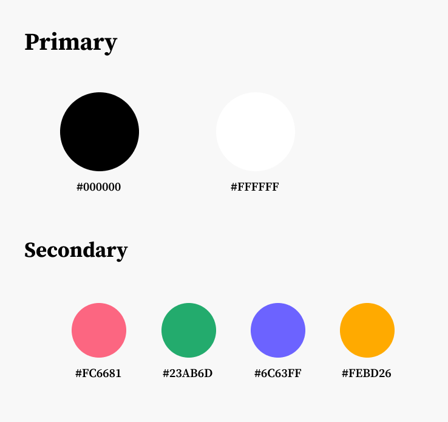

book'd
Discover your next favorite book
Case Study
Summary
In an increasingly connected world, the experience of reading should be just as connected and community-oriented. However, there is currently no social book cataloguing platform that meets the needs of the modern reader. book’d wants to transform the digital experience for book lovers and allow users of all ages and backgrounds to easily and authentically share ratings, thoughts, and stories. With a minimal aesthetic and maximal substance, I designed in the spirit of the books themselves and illuminated the joy of reading.
My role: branding and visual design, user research, UX/UI
Deliverables: style guide, user stories and flows, user personas, content strategy, sitemap, wireframes, clickable prototype
Tools: Figma, Whimsical
Challenge
book’d has to distinguish itself from major competitors like Goodreads, which has tens of millions of users, while retaining Goodreads’ most celebrated features and functionalities. This new product needs an identity that adheres to its values of joyful reading and sharing, with elegant branding and design that will attract users of all ages and backgrounds.
Solution
The book’d user experience is simple yet delightful and effective. I’ve maintained a minimalistic and elegant design to emphasize the beauty of books. The application has all the features one would need to curate and expand their reading experience, and coupled with an extremely smooth user experience, book’d makes reading fun again.
Process
User Research
To capture the backgrounds, needs, and motivations for potential users, I created a user survey and gathered feedback around people’s experience with apps like Goodreads. From the survey results, I found that while Goodreads is their literary social network of choice, users are very frustrated with the overall design and functionality of the platform, particularly noting the clunky and difficult-to-navigate design, as well as the lack of accurate and personalized experience and recommendations.
Competitive Analysis
Next, I completed a competitive analysis of the top three platforms in this space:
1. Goodreads
2. Anobii
3. LibraryThing
Goodreads is the top platform of choice, and as an Amazon product, has endless resources that have not been leveraged to improve the outdated design and poor functionality of the website. Anobii focuses on book reviews and is available in many languages. LibraryThing offers users the ability to catalog their book and differs from Goodreads and Anobii in that the platform does not have much of a social network aspect.
A new competitor must essentially have everything Goodreads has, but more. It must offer a wide variety of resources, features, and services for book lovers. It could easily differentiate its brand from the current market by having a modern, fresh, and clean design that invites users to share their love of reading with friends and get people excited about reading. Moreover, user profiles, including the author profiles, could be improved, which would help users share their interests and learn more about their friends and their favorite authors.
User Personas
After analyzing the user survey results and getting a better perspective of the social book cataloguing landscape, I developed three user personas based on feedback from additional in-person interviews.
The personas: writers/authors, students, and working professionals
User Stories
Based on user research and additional secondary research, I created user stories for the three persona types.
Across the board, user needs center mainly on the ability to share ratings and reviews to feel as if they are a part of the community. Additionally, users have to be able to organize and curate their reading experience.
User Flows
Moving forward, I incorporated these high priority tasks, along with a combination of medium and low priority tasks, into user flows.
Browsing for books
Wireframes
With the user flows, I framed the content strategy roadmap for our product, as well as an overarching sitemap, following feedback regarding the information architecture.
Then, using these artifacts, I sketched and then digitized wireframes for the mobile application. I focused on ensuring that essential features were present and grounded in the initial research phase.
After getting user feedback on the wireframes, iterations included improvements to the navigation and pop-ups.
Visual Design
Branding
Inspired by the initial user research, competitive analyses, and further market research, I started to develop a brand identity for the application, brainstorming name ideas and solidifying the typography and color palette.
The book’d experience should be smart, clean, and joyful. It must be universally accessible and attractive, with a modern sense of design.
smart. clean. joyful.
With this direction in mind, I started brainstorming potential brand names, and settled on book’d because it’s minimalist and straightforward.
Typography
Color Palette
Mockups
Using my wireframes as a guide, I created high-fidelity mockups in Figma, applying my typefaces and color palette and creating reusable elements that spanned across multiple pages in the interface.
I started by tackling the highest priority user flows and solving for the screen of highest use, letting the design take its visual cues from that page.
Prototype and Testing
Next, I created a clickable, interactive prototype in Figma and conducted usability tests. During the usability testing sessions, I asked users to complete several tasks around:
- First impressions
- Onboarding
- Navigation
- List customization
- Learning more about books and authors
Having received actionable feedback about the marketing pages, the search function, pop-up navigation, and information about books, I revised my designs and edited elements of the application based on the test results.
Here, you can see I improved the marketing language to be more direct and concrete. The language on the first screen, though it sounds good, doesn’t tell a user much about what our product offers. By making it more straightforward, the messaging becomes more effective and would get users interested in the app’s features.
Final Mockups
Conclusion
book’d was an exercise in complete design freedom from product scoping/roadmapping to ideation and prototyping. Without much direction, I was able to frame the problem and create something that I’m personally passionate about. As someone who loves to read and share books, I enjoyed dictating the vision and values of this product and will definitely benefit from something like book’d. On the flip side, with increased freedom comes increased ambiguity. I found myself getting lost in brainstorming and contemplating questions about design, content, and branding direction. However, by actively seeking advice and feedback from others, I was able to continue pushing forward. In the future, I’ll make sure to remind myself that great design doesn’t happen in a vacuum and collaborating with others will always result in a better product.